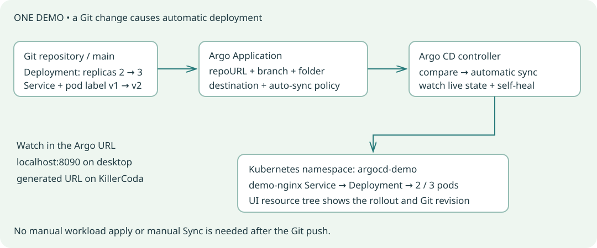

The demo you will show
Install Argo CD → save Kubernetes YAML in Git → create one Argo Application → automatic deployment → Git push → automatic reconciliation.
No Lab 1 deployment is required for the beginner demo. You need a ready Kubernetes cluster, Git Bash or Linux Bash, kubectl, Helm, and a local clone of this repository. KillerCoda users can run bash scripts/install-helm-linux.sh first. Work from the repository root. If you already ran the older lab, its lab-nginx/lab-grafana/lab-prometheus tiles may remain; focus on the new demo-nginx tile.

STEP 1Deploy Argo CD first
Install only the Argo CD control plane. Do not create an Application yet. This pinned Helm chart is already included in the repository, so no Helm repository download is needed. Argo uses HTTP only for this disposable learning setup. On Docker Desktop select the docker-desktop context; on KillerCoda keep its existing context.
Check the cluster and install Argo CD
export MSYS_NO_PATHCONV=1
kubectl config current-context
kubectl get nodes
helm upgrade --install argocd ./vendor/argo-cd-10.11.6.tgz -n argocd --create-namespace -f gitops/argocd-values.yaml --wait --timeout 10m
kubectl get pods -n argocd
Expected: Argo CD server, application-controller, repo-server and Redis are Running. This installation creates no demo Application and no demo NGINX pods.
Interview questions and answers
What does Argo CD do?
Answer: It reads the desired Kubernetes configuration from Git, compares it with the cluster, and applies it according to the Application sync policy.
Which components matter for this demo?
Answer: The API server provides UI and CLI access. Repo-server reads Git. Application-controller compares and syncs resources. Redis provides caching.
Open the Argo CD URL
Keep terminal A open for the URL. Run all later commands in terminal B. The same helper works in Git Bash and KillerCoda: it forwards the Argo CD Service on port 8090 and prints the correct browser URL. No ingress controller or hosts-file change is needed to learn Argo CD.
Terminal A: open access to the UI
bash scripts/argocd-ui.sh
Docker Desktop: open
http://localhost:8090.
KillerCoda: open the URL printed by the helper, or Traffic / Ports → port 8090. The helper binds to the playground VM for that access.
Username: admin. Read the password in terminal B below.
Terminal B: read the initial password
kubectl get secret argocd-initial-admin-secret -n argocd -o jsonpath='{.data.password}' | base64 --decode
printf '\n'
What is the URL helper doing?
Docker Desktop command used by the helper
kubectl port-forward -n argocd svc/argocd-server 8090:80 --address 127.0.0.1
KillerCoda command used by the helper
sed 's/PORT/8090/g' /etc/killercoda/host
kubectl port-forward -n argocd svc/argocd-server 8090:80 --address 0.0.0.0
Expected: You can sign in and see the Applications screen. Change the initial password after first login. If you changed it earlier, use your changed password.
Interview questions and answers
Does the UI URL deploy my app?
Answer: No. It only exposes the Argo server. An Application tells the controller which Git manifests to deploy.
Why does localhost not work in my laptop browser for KillerCoda?
Answer: The cluster runs on a remote VM. Use the platform-generated port 8090 URL in your laptop browser; localhost:8090 works inside the remote terminal for the CLI.
Create Deployment and Service manifests
Now define what Kubernetes should run. The Deployment creates two NGINX pods; the Service gives those pods a stable endpoint. These two files are already included. Expand the commands to see how to write them from scratch. Do not kubectl apply these workload files. Argo CD will deploy them from Git in step 5.
Inspect the two manifests
cat gitops/demo/manifests/deployment.yaml
cat gitops/demo/manifests/service.yaml
gitops/demo/manifests/deployment.yaml
Create deployment.yaml
mkdir -p gitops/demo/manifests
cat > gitops/demo/manifests/deployment.yaml <<'EOF'
apiVersion: apps/v1
kind: Deployment
metadata:
name: demo-nginx
spec:
replicas: 2
selector:
matchLabels:
app: demo-nginx
template:
metadata:
labels:
app: demo-nginx
demo-version: v1
spec:
containers:
- name: nginx
image: nginx:1.28.0-alpine
ports:
- containerPort: 80
readinessProbe:
httpGet:
path: /
port: 80
resources:
requests:
cpu: 50m
memory: 64Mi
limits:
cpu: 500m
memory: 128Mi
EOF
gitops/demo/manifests/service.yaml
Create service.yaml
mkdir -p gitops/demo/manifests
cat > gitops/demo/manifests/service.yaml <<'EOF'
apiVersion: v1
kind: Service
metadata:
name: demo-nginx
spec:
type: ClusterIP
selector:
app: demo-nginx
ports:
- port: 80
targetPort: 80
EOF
replicas: 2 is the desired pod count. The Deployment selector and pod label both use app: demo-nginx; the Service uses that same selector. The extra pod label demo-version: v1 is a safe configuration-change demo: changing it later triggers a new rollout.
Expected: The YAML files are present locally. At this point no new demo workload has been deployed.
Interview questions and answers
Deployment versus Service?
Answer: A Deployment maintains the desired pod replicas. A Service selects ready pods using labels and provides a stable network endpoint.
Why not apply the manifests manually?
Answer: For this exercise, Git is the desired-state source and Argo CD performs the deployment. Applying the workload directly would hide the automatic deployment we want to demonstrate.
Connect Git and write the Application
The Argo Application is the connection between Git and Kubernetes. It is different from a Deployment: it says where to read YAML, which branch to watch, where to deploy, and whether to sync automatically. Students should fork this repository first. The instructor can keep the existing vrdipu repository.
Connect your repository in the UI
- Open Settings → Repositories → Connect Repo.
- Choose HTTPS, type git, and enter your public GitHub repository URL.
- Leave username/password empty for a public repository, then click Connect.
- Confirm the connection is Successful.
A public repository can also be read directly from the Application repoURL without registering it first. Connecting it here makes the Git connection visible during your lesson. GitHub push credentials on your laptop are separate from Argo CD’s read access.
Students: set your fork URL once
git remote set-url origin https://github.com/YOUR-USERNAME/ingress-lab.git
sed -i 's|repoURL: .*|repoURL: https://github.com/YOUR-USERNAME/ingress-lab.git|' gitops/demo/application.yaml
If you are the instructor working in vrdipu/ingress-lab, skip the fork command. Read the Application below, keeping your own repository URL in spec.source.repoURL.
The Application file: gitops/demo/application.yaml
apiVersion: argoproj.io/v1alpha1
kind: Application
metadata:
name: demo-nginx
namespace: argocd
spec:
project: default
source:
repoURL: https://github.com/vrdipu/ingress-lab.git
targetRevision: main
path: gitops/demo/manifests
destination:
server: https://kubernetes.default.svc
namespace: argocd-demo
syncPolicy:
automated:
enabled: true
prune: false
selfHeal: true
syncOptions:
- CreateNamespace=true
| Field | What it means |
|---|
| metadata.name: demo-nginx | The tile you will open in the Argo CD UI. |
| metadata.namespace: argocd | The Application object lives alongside Argo CD. |
| project: default | Use the built-in project for this small demo; a restricted project is introduced only in the optional chart exercise. |
| source.repoURL | The Git repository Argo reads. It must match your fork if you want your pushes to deploy. |
| targetRevision: main | Watch the main branch. |
| path: gitops/demo/manifests | Render only these workload YAML files, not the Application file itself. |
| destination.server | Use the same Kubernetes cluster where Argo runs. |
| destination.namespace: argocd-demo | Create the demo workload here, separate from Argo and Lab 1. |
| automated.enabled: true | Automatically apply a changed desired state from Git. |
| selfHeal: true | Repair manual drift in the live workload. |
| prune: false | Do not automatically delete resources removed from Git in this beginner lesson. |
| CreateNamespace=true | Create argocd-demo on the first sync. |
Save and push the manifests to Git
git add gitops/demo/
git commit -m "Prepare my Argo CD demo"
git push origin main
If the files were already committed unchanged, Git may report “nothing to commit”; continue with the existing pushed files. An uncommitted local edit is invisible to Argo CD. The Application YAML is manually bootstrapped in step 5; there is no parent Application managing it.
Expected: The Git connection is successful, the workload manifests are on the watched branch, and the Application points at the correct repository and folder.
Interview questions and answers
Why do I need an Argo Application file?
Answer: It binds the repository, revision, manifest path, destination and synchronization policy. Without that link, Argo does not know which configuration should manage which workload.
Do I give Argo my GitHub Google-login password?
Answer: No. Public Git repositories need no read credential. For private repositories configure supported repository credentials securely; your interactive GitHub login is not a repository password.
Let Argo deploy automatically
Create only the Application object. It already has auto-sync enabled, so Argo reads Git, creates the namespace, applies the Deployment and Service, and waits for the pods to become healthy. Do not click Sync to make this demonstration work.
Create the Application; let Argo do the deployment
kubectl apply -f gitops/demo/application.yaml
kubectl get applications -n argocd
bash scripts/argocd-demo-check.sh 2
In the URL: open Applications → demo-nginx. Watch the resource tree show a Deployment, ReplicaSet, two Pods and a Service. Check Sync status: Synced and Health: Healthy. Details shows your repo, manifest path and resolved Git commit.
Verify the resulting Kubernetes objects
kubectl get deployment,pods,svc -n argocd-demo -L demo-version
Expected: Argo automatically deploys two ready demo-nginx replicas. The workload was created from Git; only its Application object was applied manually.
Interview questions and answers
What starts the automatic deployment?
Answer: Creating the Application makes Argo compare Git with the cluster. Because automated.enabled is true and the desired resources are missing, Argo automatically syncs them.
Synced versus Healthy?
Answer: Synced means live configuration matches the desired configuration. Healthy means resource-specific health checks pass. Both should be checked; Synced alone does not prove working pods.
Demo: change replicas and configuration
This is your main classroom demonstration. Keep the demo-nginx resource tree open in the browser. Change the replica count in the Git manifest, commit and push, then watch Argo create the third pod. Do not run kubectl scale, kubectl apply on the Deployment, or a manual sync for this demo.
Demo A: Git changes two replicas to three
sed -i 's/replicas: 2/replicas: 3/' gitops/demo/manifests/deployment.yaml
git diff -- gitops/demo/manifests/deployment.yaml
git add gitops/demo/manifests/deployment.yaml
git commit -m "Demo: scale NGINX to three through Git"
git push origin main
Show the audience: 1. The pushed Git commit. 2. Argo’s new revision and operation in the tile. 3. Desired replicas becomes 3. 4. A third pod appears. Argo polls Git; allow about 1–3 minutes with this lab configuration, including polling jitter and rollout time. You can click Refresh to request comparison sooner. Refresh is not Sync; auto-sync still performs the deployment.
Verify the result without causing a deployment
bash scripts/argocd-demo-check.sh 3
kubectl get pods -n argocd-demo
Demo B: change a pod-template configuration label
sed -i 's/demo-version: v1/demo-version: v2/' gitops/demo/manifests/deployment.yaml
git add gitops/demo/manifests/deployment.yaml
git commit -m "Demo: roll out NGINX pod configuration v2"
git push origin main
# After Argo detects the commit, inspect the new pods:
kubectl get pods -n argocd-demo -L demo-version
Changing the pod-template label triggers a Deployment rollout. The new pods show demo-version=v2. This is a configuration demonstration, not an NGINX page-content change.
Restore the demo baseline through Git
sed -i 's/replicas: 3/replicas: 2/; s/demo-version: v2/demo-version: v1/' gitops/demo/manifests/deployment.yaml
git add gitops/demo/manifests/deployment.yaml
git commit -m "Restore demo to two replicas and configuration v1"
git push origin main
# Wait for Argo to detect this commit, then:
bash scripts/argocd-demo-check.sh 2
Expected: Git pushes cause automatic deployment. The final baseline is two replicas with pod label demo-version=v1.
Interview questions and answers
Why does my local file edit not deploy?
Answer: Argo reads the remote Git branch, not your laptop working directory. You must commit and push to the repository and branch configured in the Application.
Refresh versus Sync?
Answer: Refresh compares current Git and live state. Sync applies manifests. Auto-sync can act after a refresh; a refresh itself is not a manual deployment request.
Demo: repair a manual change
Now demonstrate the other reconciliation trigger: live drift. Git still says two replicas. Temporarily scale the live Deployment to one; self-healing should restore two without a new Git commit. This deliberately differs from the previous Git-change demo.
Introduce live drift and wait for repair
kubectl scale deployment demo-nginx -n argocd-demo --replicas=1
bash scripts/argocd-demo-check.sh 2
kubectl get deployment demo-nginx -n argocd-demo
Expected: Argo repairs the manual scale to match the Git value 2. The Git revision did not change.
Interview questions and answers
Auto-sync versus self-healing?
Answer: Auto-sync deploys a changed desired state from Git. Self-healing additionally corrects live-only changes while the Git revision stays the same.
Where should a permanent replica change be made?
Answer: In the watched Git manifest. A manual cluster edit can be overwritten by self-healing because it is not the declared desired state.
Use five simple CLI commands
The CLI talks to the same Argo server as the browser. Keep the step 2 port-forward running. Log in once, then learn five actions: list, inspect, refresh, wait, history. You do not need a manual sync command for the automatic demo.
Install the matching CLI once, then log in
bash scripts/install-argocd-cli.sh
export PATH="$HOME/.local/bin:$PATH"
argocd login localhost:8090 --username admin --plaintext --grpc-web --skip-test-tls
# Enter your password interactively.
--plaintext matches this local HTTP server. --grpc-web uses the compatible API transport, and --skip-test-tls skips an unnecessary HTTPS probe against this local HTTP endpoint. Use localhost:8090 in the same machine’s terminal on either platform, even though KillerCoda’s browser URL looks different.
Five commands you can explain during the demo
argocd app list
argocd app get demo-nginx
argocd app get demo-nginx --refresh
argocd app wait demo-nginx --sync --health --timeout 180
argocd app history demo-nginx
| Command | Meaning |
|---|
| app list | Show Application sync and health status. |
| app get demo-nginx | Show its repository, destination, resources and status. |
| app get demo-nginx --refresh | Ask Argo to compare the latest Git state sooner. |
| app wait ... | Wait for sync and health; it does not request a sync. |
| app history ... | See which Git revisions were deployed. |
Later: manual sync, diff and repository commands
Optional inspection and manual operations
argocd repo list
argocd app diff demo-nginx
# Only for a separate MANUAL-sync exercise, not the automatic demo:
argocd app sync demo-nginx
Interview questions and answers
Does app wait deploy an Application?
Answer: No. It waits for the requested status conditions. Deployment happens through auto-sync or an explicit sync operation.
Do I need the CLI to use Argo CD?
Answer: No. The Application YAML, browser UI and kubectl are enough for this demo. The CLI is another convenient client for the same server.
After the beginner demo: manage today’s three Helm applications
This is optional. The main lesson above should work before starting this handover. If you use a fork, first run scripts/gitops-repository.sh with your HTTPS origin URL so the chart Applications and restricted project also reference your fork; review, commit and push those declarations. These Applications read charts/nginx, charts/prometheus and charts/grafana from the same repository and manage the original ingress-lab namespace. They start in manual mode so you can inspect adoption before changing ownership.
Requires Lab 1 workloads: bootstrap and inspect the existing chart Applications
kubectl apply -f gitops/bootstrap/project.yaml
kubectl apply -f gitops/applications/
# UI: inspect DIFF for lab-nginx, lab-prometheus and lab-grafana.
bash scripts/argocd-sync.sh
bash scripts/argocd-check.sh
Argo renders the Helm charts but does not update the original Helm release history. Stop using Helm upgrade/uninstall for these three workloads once Argo manages them. To demonstrate automatic delivery with a chart next, set that Application’s automated.enabled=true and selfHeal=true in its YAML, commit/push and apply the Application declaration once; then change charts/<app>/values.yaml in Git. Changing the Application YAML itself needs reapplication because these Application files are not managed by a parent app.
Interview questions and answers
How does Argo deploy an existing Helm chart?
Answer: The Application source points to the chart folder. Argo uses Helm to render manifests and then manages those Kubernetes resources; it does not run a normal Helm release installation.
Can I keep using Helm and Argo to edit the same workloads?
Answer: Choose one active manager. Concurrent Helm upgrades and GitOps reconciliation can overwrite each other. The optional handover freezes the original Helm release records.
When the demo does not deploy
- Check the Application repoURL, main branch and manifest path.
- Confirm the commit is pushed and its SHA appears in Argo.
- Check that automated.enabled is true and the repository connection succeeds.
- Inspect the Application conditions and pod events.
Read the actual error
kubectl get application demo-nginx -n argocd -o yaml
kubectl get pods -n argocd-demo
kubectl get events -n argocd-demo --sort-by=.lastTimestamp
Interview questions and answers
OutOfSync versus Degraded?
Answer: OutOfSync means desired and live configuration differ. Degraded is a health result. Read both rather than assuming one implies the other.
Why can an app show a repository error?
Answer: The URL, branch or path may be wrong, access may be denied, or network fetching/rendering may fail. Read the Application condition and repository connection error.
Why is a pod Pending?
Answer: The scheduler may lack CPU/memory or have node/taint constraints. Inspect kubectl describe pod and cluster capacity; Argo sync success cannot solve missing cluster resources.
How do I undo a bad Git change?
Answer: Create a new Git revert commit and push it. Argo reconciles the reverted desired state. This keeps the rollback auditable and consistent with auto-sync.
Finish with a predictable demo state
Leave Git at two replicas and demo-version v1. Keep the Application auto-syncing for the next session. Stop the UI forward with Ctrl+C when finished. To stop managing the demo without deleting workloads, delete only the Application: it has no resources-finalizer. Do not delete the demo namespace unless you also intend to delete its workload.
Optional: stop managing the demo while preserving its workload
kubectl delete application demo-nginx -n argocd --cascade=orphan
References: Argo CD getting started · Automatic sync and self-healing · CLI installation.